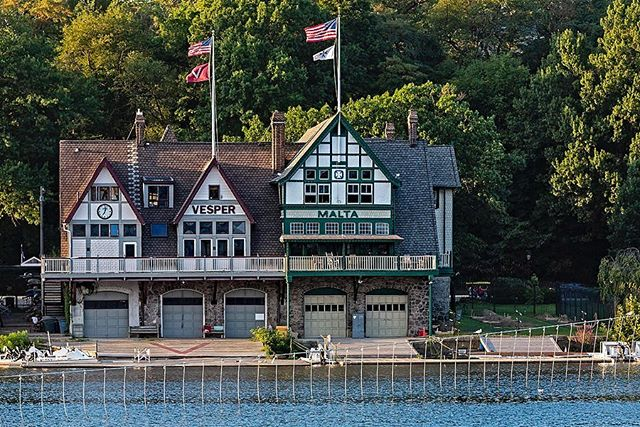

About Us
.
Welcome to the Rowers Creek Boathouse! Established in 1982, we are dedicated to providing a unique and memorable boating experience for all.
Our beautiful boathouse is located on the banks of the Schuylkill River, offering breathtaking views and easy access to the water for all your needs!
We offer a wide range of activities to suit every interest and skill level, from kayak and stand-up paddleboard rentals to indoor rowing training.
Our staff is always on hand to help you choose the perfect activity and ensure a safe and enjoyable time on the water.

At the Historic Boathouse, we believe that there's no better way to explore the beauty of the outdoors and get fit at the same time.
Whether you're a seasoned boater or just looking for a new adventure, we look forward to welcoming you to our boathouse and helping you make memories that will last a lifetime.